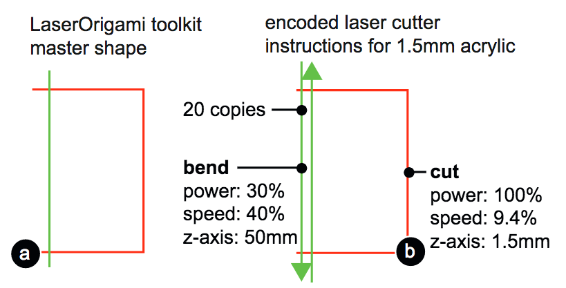
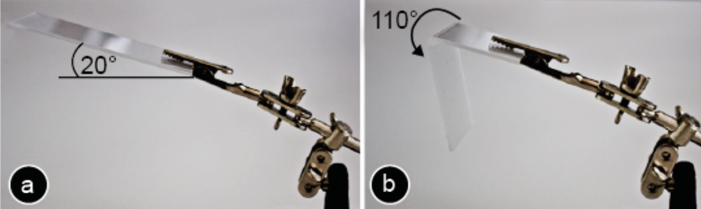
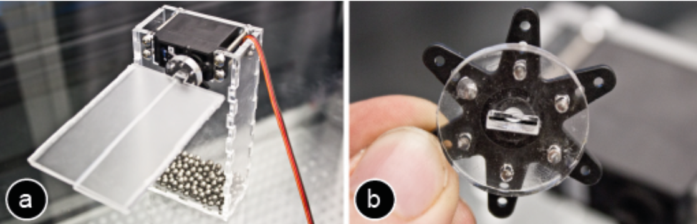
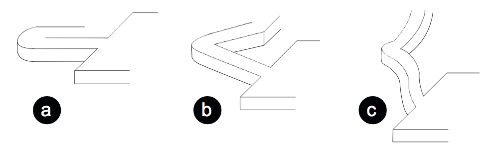
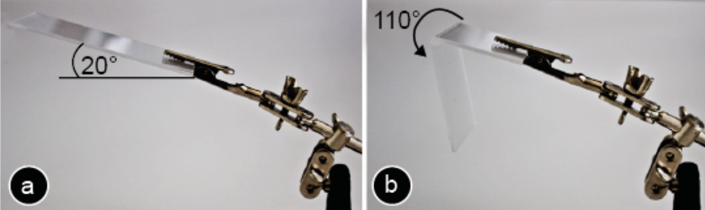
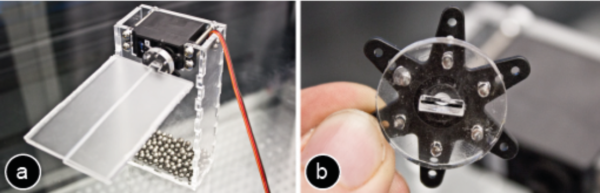
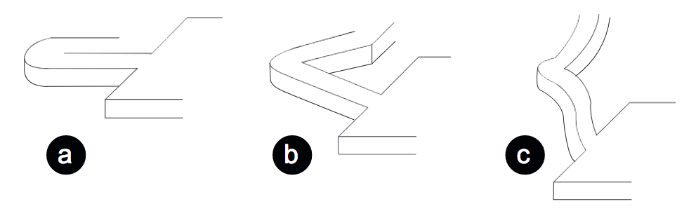

Publication
Mueller, S., Kruck, B., and Baudisch, P.
LaserOrigami: Laser-Cutting 3D Objects
In Proceedings of
CHI ’13
, pp. 2585-2592.
Best Paper Award, Demo at CHI'13
DOI
Paper
Video
Slides
Talk
I worked on this project before joining MIT. Here is the original LaserOrigami project page at Hasso Plattner Institut.
 Sponsors
Sponsors
 Press
Video
Talk
Slides
Press
Video
Talk
Slides


I worked on this project before joining MIT. Here is the original LaserOrigami project page at Hasso Plattner Institut.
1 / 88

2 / 88

3 / 88

4 / 88

5 / 88

6 / 88

7 / 88

8 / 88

9 / 88

10 / 88

11 / 88

12 / 88

13 / 88

14 / 88

15 / 88

16 / 88

17 / 88

18 / 88

19 / 88

20 / 88

21 / 88

22 / 88

23 / 88

24 / 88

25 / 88

26 / 88

27 / 88

28 / 88

29 / 88

30 / 88

31 / 88

32 / 88

33 / 88

34 / 88

35 / 88

36 / 88

37 / 88

38 / 88

39 / 88

40 / 88

41 / 88

42 / 88

43 / 88

44 / 88

45 / 88

46 / 88

47 / 88

48 / 88

49 / 88

50 / 88

51 / 88

52 / 88

53 / 88

54 / 88

55 / 88

56 / 88

57 / 88

58 / 88

59 / 88

60 / 88

61 / 88

62 / 88

63 / 88

64 / 88

65 / 88

66 / 88

67 / 88

68 / 88

69 / 88

70 / 88

71 / 88

72 / 88

73 / 88

74 / 88

75 / 88

76 / 88

77 / 88

78 / 88

79 / 88

80 / 88

81 / 88

82 / 88

83 / 88

84 / 88

85 / 88

86 / 88

87 / 88

88 / 88

LaserOrigami:
Laser-Cutting 3D Objects
Figure 1: LaserOrigami fabricates 3D structure by bending, rather than using joints, thereby eliminating the need for manual assembly. Here it fabricates a mobile phone screen cam by (a) cutting the contour lines and (b) heating up the bend paths until the material becomes compliant and bends down under the influence of gravity. When the user retrieves the object, it is already assembled and (c) ready to be deployed.
We present LaserOrigami, a rapid prototyping system that produces 3D objects using a laser cutter. LaserOrigami is substantially faster than traditional 3D fabrication techniques such as 3D printing and unlike traditional laser cutting the resulting 3D objects require no manual assembly. The key idea behind LaserOrigami is that it achieves three-dimensionality by folding and stretching the workpiece, rather than by placing joints, thereby eliminating the need for manual assembly. LaserOrigami achieves this by heating up selected regions of the workpiece until they become compliant and bend down under the force of gravity. LaserOrigami administers the heat by defocusing the laser, which distributes the laser’s power across a larger surface. LaserOrigami implements cutting and bending in a single integrated process by automatically moving the cutting table up and down — when users take out the workpiece, it is already fully assembled. We present the three main design elements of LaserOrigami: the bend, the suspender, and the stretch, and demonstrate how to use them to fabricate a range of physical objects. Finally, we demonstrate an interactive fabrication version of LaserOrigami, a process in which user interaction and fabrication alternate step-by-step.
Introduction
Rapid prototyping is a key technique in design process that allows “getting the right design and getting the design right” [3]. While the use of rapid prototyping in HCI was initially limited to software interfaces (e.g., Denim [13]) and ubicomp interfaces (e.g. ProximityToolkit [15]), researchers have recently started prototyping physical objects (e.g. Midas [22], Printed Optics [27]). Such systems use personal fabrication tools, such as 3D printers, milling machines, and laser cutters, to quickly create one-off physical objects.
A key requirement of rapid prototyping is speed, as faster iteration allows for additional versions and thus for a better design within a given time frame. Unlike software interfaces that may only need to be recompiled, physical objects require actual production—a generally much more time-consuming step.
Additive fabrication methods, such as 3D printers, offer the most freedom in the shapes they can produce, but as they assemble objects from individual voxels, the time required grows cubed in the size of the workpiece—thus they are slow. Laser cutters achieve much higher speeds by assembling the object from 2D plates rather than individual voxels. However, laser cutters generally achieve three-dimensionality through the use of joints. These require assembly, which introduces repetitive manual labor into fabrication. This also limits how fast designers can iterate.
In this paper, we demonstrate how to overcome this limitation. Our system LaserOrigami allows users to laser cut 3D structures by bending the workpiece rather than by means of joints, thereby eliminating the need for manual assembly. Inspired by a technique used to shape steel [8], LaserOrigami allows users to create 3D objects in a single fast and integrated process. As we demonstrate in section “Interactive LaserOrigami”, our approach is fast enough to even allow for interactive fabrication [29], i.e., a use case in which users modify the workpiece step-by-step, while it is in the laser cutter (extending constructable [17]).
LaserOrigami
Figure 1 shows an example object created using LaserOrigami—a mobile phone screen cam. This example was fabricated using five “bends”, one of the three basic elements of LaserOrigami, which we discuss in detail in section “The Design Elements of LaserOrigami”.
Basis of LaserOrigami: bending with a defocused laser
The key idea behind LaserOrigami is that it achieves three-dimensionality by folding/bending the workpiece, rather than by placing joints, thereby eliminating the need for manual assembly. LaserOrigami achieves this by heating up selected regions of the workpiece until they turn compliant and bend down under the forces of gravity.
LaserOrigami bends a workpiece by distributing the laser’s power across a larger surface. As shown in Figure 2a, the cutting laser is normally focused on the workpiece, which causes the material to turn so hot that it evaporates.
Figure 2: (a) LaserOrigami cuts the workpiece by focusing the laser on the workpiece, (b) it bends by defocusing the laser.
In contrast, LaserOrigami bends the workpiece by distributing the heat over a larger surface. By moving the work-piece away from the laser it defocuses the laser (Figure 2b); this distributes the laser’s heat over a larger region (Figure 3). In addition, LaserOrigami distributes the laser’s heat further by repeatedly running the laser back and forth over the region to be bent. As a result, the workpiece heats up only to the point where it turns compliant; it then bends under the influence of gravity. The result is a precise 90° bend.
LaserOrigami modifies focus by moving the cutting table up and down; the cutter we used (model PLS6.150D) allows doing this under computer control. This allows it to implement cutting and bending in a single integrated process. When users take the workpiece out of the cutter, it is already fully assembled.
laser is normally focused on the workpiece, which causes the material to turn so hot that it evaporates.
Figure 3: Heated area of the defocused laser when the motion table is lowered. (a) The laser pulses but does not move, (b) moving the laser along a line.
In order to allow parts of the workpiece to drop, we prop up the workpiece inside of the cutter (on our PLS6.150D laser cutter, this is possible after removing the honeycomb grid). We created a simple configurable support grid for this purpose (Figure 4).
Figure 4: (a) This support grid (b) creates empty space below the workpiece that parts can fold and drop into.
LaserOrigami’s CAD User interface
LaserOrigami offers two types of interfaces. The first one is a traditional CAD-style interface, which we created as a master shape library for Microsoft Visio.
Figure 5: (a) LaserOrigami provides a Microsoft Visio master shape library for fast prototyping of folded objects. (b) Here the user has dragged a double bend from the LaserOrigami shape library onto the drawing surface and adjusts it by rotating the provided handle.
Figure 5 shows a user creating the mobile phone screen cam from Figure 1. The user draws the object in Microsoft Visio with the LaserOrigami master shape library. To add a double bend, the user drags a double bend master shape into the design and rotates it to fit the existing drawing. The user repeats the process on the other side of the screen cam.

Figure 6: (a) This master shape from the LaserOrigami Visio toolkit encodes a 10cm bend for 1.5mm acrylic.
The shapes in the LaserOrigami master shape library encode all the “instructions” that the laser cutter requires in order to fabricate the respective shape, i.e., the lines that cut and the lines that implement the back-and-forth motion of the defocused laser. As shown in Figure 6b, we encode the back-and-forth motion of the defocused laser as pairs of lines of opposite orientation.
Switching between cutting and bending, i.e., moving the table up and down, is encoded in the line colors. As an example, Figure 6 shows the lines that implement a simple bend. In the configuration dialog of our cutter, we configured red lines to mean cutting, i.e., whenever the laser encounters a red line the table will move the laser into focus. In contrast, we configured green lines so as to move the table down, causing the laser to go into defocused mode and heating up the material for bending. The property we manipulate here is called z-axis for our PLS6.150D laser cutter. It is normally used to move materials of different thicknesses into focus; with LaserOrigami we instead use it to defocus.
To make sure all features are executed in proper order, we arrange the stacking order of all lines within Visio; bottom lines are executed first, so we can arrange cutting order using “send forwards/backwards” commands when creating the master shapes. Disabling the Vector Optimizer feature in our PLS6.150D cutter makes sure that line order is maintained during cutting. Also, since this cutter model always executes all lines of one color before moving on to the next color, we use a new line color for each group of cuts or bends.
Finally, we hide all lines of a master shape that encode laser cutter instructions by moving them on a hidden layer in the drawing. This allows the user to work with only the information necessary, i.e., to determine where cuts and bends will be executed by the laser but not how, thereby preventing a cluttered interface.
Contribution, Benefits, and Limitations
The main contribution of this paper is the concept of rapid prototyping of 3D objects using a laser cutter, so as not to require manual assembly. As illustrated by Figure 7, our approach is substantially faster than traditional 3D fabrication techniques such as 3D printing and unlike traditional laser cutting, the resulting 3D objects require no manual assembly.
We introduce three design elements (bend, suspender, and stretch), we extend the design space by adding a servomotor, and we offer two user interfaces, i.e., a traditional CAD-like interface through Microsoft Visio and an interactive fabrication interface through constructable.
 Figure 7: LaserOrigami fabricated the screen cam from Figure 1 in 3min compared to (b) the 240min the 3D printer required (Dimension Elite 3D printer). (c) Traditional laser cutting requires assembly.
The bending concept behind LaserOrigami offers the following three advantages. (1) Faster than 3D printing, eliminates need for assembly from laser cutting. (2) Sturdier result than finger joints, because bending allows fabricating objects in one piece. (3) Easier calibration: traditional finger joints require a very precise calibration to achieve the desired tight fit; bending does not. (4) Cheaper than 3D printing.
On the other hand, LaserOrigami is also subject to four limitations. (1) LaserOrigami is limited to object shapes that can be constructed by cutting, folding and stretching the material. (2) Works only with materials that become compliant when heated up. (3) Limited length of what can be bent or suspended in one piece. If a bend is too long, it cools down faster than the laser can heat it up. (4) Limited material thickness, again limited by the power of the laser.
The Design Elements of LaserOrigami
LaserOrigami assembles all designs from the three basic design elements shown in Figure 8, i.e., (1) the bend, (2) the suspender, and (3) the stretch.
Figure 8: The design elements of LaserOrigami: (a) the bend, (b) the suspender, and (c) the stretch.
#1: Bends
We already demonstrated bends in Figure 1. Bends also allow fabricating decorative elements, such as those shown in Figure 9.
Figure 9: Using bending to create this decorative city outline.
Bending Beyond 90°
The bend element shown above only allows bending up to 90°, which limits our designs to 2.5D. We can bend past the vertical axis by holding the workpiece slanted against the desired bend direction (Figure 10).

Figure 10: By slanting this workpiece 20° against the direction of gravitational force, we achieve a bending angle of 110°.
A more flexible solution is to bend successively (Figure 11). The purpose of the outer patch is to serve as a lever—once it has done its job we will typically cut it off. The lever approach thus obviously comes at the expense of material.
Figure 11: Successive bending allows the inner patch to bend beyond 90°.
A servomotor, finally, provides even more flexibility as it allows rotating the workpiece repeatedly (Figure 12).
Figure 12: (a-e) To allow fabricating this credit card holder we extend LaserOrigami with a servomotor that allows rotating the workpiece. (f) The final card holder.
A small tab that is part of the workpiece locks into the servomotor (Figure 13). When done, LaserOrigami cuts off the tab, causing the assembled workpiece to drop.

Figure 13: We attach the workpiece to the servomotor using this tab.
#2: Suspenders
Suspenders allows suspending a patch of material in a controlled way. Suspenders are designed to unfold when heated up with the laser as shown in Figure 14.
The length of the suspenders defines how deeply the patch will be suspended (Figure 15).

Figure 14: Suspenders: (a) the raw path that is cut. (b) When the laser heats up the suspender, it unfolds until it (c) reaches its final straight shape.
The use of three or more suspenders of identical length creates a horizontal patch (Figure 16a). While we will most commonly suspend objects parallel using suspenders of equal lengths, suspenders of unequal lengths allow us to create ramps (Figure 16b).
Figure 15: (a) the same patch suspended with a set of short and (b) long suspenders.
Figure 16: (a) Suspenders of equal length suspend a horizontal patch, (b) unequal suspenders create a ramp.
Creating a suspender creates a hole in the workpiece—one of the limitations of our approach. However, the approach offers freedom in “routing” the suspenders, which allows us to place them so as to minimize interference with the remaining workpiece (Figure 17).
Figure 17: (a) This design does not work, because suspenders break the workpiece apart. (b) Rerouting the suspenders to minimize interference.
Suspending recursively allows us to create 2.5D landscapes from elevation lines (Figure 18a). To keep the next suspension in the plane of the laser cutter, we suspend the inner ring first, working outwards.
Figure 18: Suspending recursively: If an upper level gets suspended, it moves all lower levels with it. Here we fabricate a multi-level terrain in one piece.
#3: Stretching
Suspenders are our general mechanism for suspending a patch of material. However, in some cases, the material for the suspenders is required, such as for the paint holder shown in Figure 19c. In this case, we can suspend by stretching. To suspend a patch by stretching, we heat up its outline until it gets compliant und stretches due to the weight of the suspended patch. If a patch is too light, we can add weights to it before suspending (Figure 19a).
Figure 19: Suspending a patch using stretching creates a container that can hold a liquid.
Stretching causes the walls of the suspended patch to get thinner, which limits the maximum suspension depth. How deep a patch can be suspended by stretching depends on the material thickness as well as the width of the stretched region.
Interactive LaserOrigami
In addition to the CAD-style interaction, LaserOrigami is fast enough to allow for interactive fabrication of 3D objects. To explore this, we integrated LaserOrigami into the interactive fabrication platform constructable [17] (Figure 20).
constructable implements functionality as laser tools, such as the polyline tool for drawing straight lines. Extending the constructable tool set with the LaserOrigami design elements thus meant to turn each of the shape library elements discussed earlier into a separate laser tool, such as bend, suspend, and stretch tool. To set parameters for these tools, such as the size of the bending angle or the length of the suspenders, we added a numpad that allows users to enter a single global parameter that is passed to the current tool.
Figure 20: We integrated LaserOrigami into the interactive fabrication platform constructable [17]: Users interact by drafting directly on the workpiece with hand-held lasers. (b) Here the user draws a bend path using the bend laser. (c) The system responds by bending the selected piece using the defocused laser.
Figure 21 illustrates how to bend interactively by drawing a stroke across a part of the workpiece using the bend tool. A bend can only occur between two cuts, which allows LaserOrigami to compute the bend as the intersection of the user’s draw path and the existing cuts in the workpiece. Users can create multiple bends efficiently by crossing using a single long stroke (Figure 21b).
Figure 21: (a) Bending the workpiece by drawing a bend path across. (b) Users can bend multiple parts at once by crossing them all at once.
Interactive LaserOrigami also allows controlling the servomotor by entering the desired angle into the numpad (Figure 22).
Figure 22: The servomotor allows creating precise bending angles interactively: (a) attach piece to motor, (b) enter bend angle into numpad and draw bend path with bend tool, (c) result.
Figure 23 demonstrates how to interactively construct a plant holder using the suspend tool, i.e., by (a) drawing the base plate using the polyline tool as sketchline, (b) creating the top-level surface using constructable’s scale tool with depth as a numpad parameter, and (c) suspending the base plate using the suspend tool.
Figure 23: Creating a plant holder interactively.
Technical Details
In this section we provide the details required to replicate the presented work.
Master shapes (in combination with the laser cutter’s configuration file) encapsulate our knowhow of where to heat and in what order. For our PLS6.150D laser cutter with a 2.0’’ lens and 1.5mm thick acrylic, for example, we defocus the laser by 50mm and use 40% speed and 30% power and we move the laser 40 times across each bend and 6 times across each inflection point of each suspender.
To maximize the time the laser is actually running and minimize the time elements cool off, we create pairs of bend lines of opposite orientation. For the same reason, we perform multiple bend lines on a single suspender before heating up the other suspenders in the same group (e.g., six each for the example shown in Figure 23). To compensate for heat loss along edges, we make bend lines protrude past object outlines.
To make sure all elements unfold properly, we continue to heat all inflection points past the moment when an object is starting to bend. In the case of suspenders, the inflection point in the center moves not only vertically, but also hori- zontally while dropping (see Figure 14). We compensate for this horizontal movement by creating additional bend lines located across the different horizontal positions of the dropping inflection point.
The PLS6.150D laser points down at an angle, which introduces a horizontal offset during defocusing. We compensate for the offset by shifting bend lines accordingly
Figure 7: LaserOrigami fabricated the screen cam from Figure 1 in 3min compared to (b) the 240min the 3D printer required (Dimension Elite 3D printer). (c) Traditional laser cutting requires assembly.
The bending concept behind LaserOrigami offers the following three advantages. (1) Faster than 3D printing, eliminates need for assembly from laser cutting. (2) Sturdier result than finger joints, because bending allows fabricating objects in one piece. (3) Easier calibration: traditional finger joints require a very precise calibration to achieve the desired tight fit; bending does not. (4) Cheaper than 3D printing.
On the other hand, LaserOrigami is also subject to four limitations. (1) LaserOrigami is limited to object shapes that can be constructed by cutting, folding and stretching the material. (2) Works only with materials that become compliant when heated up. (3) Limited length of what can be bent or suspended in one piece. If a bend is too long, it cools down faster than the laser can heat it up. (4) Limited material thickness, again limited by the power of the laser.
The Design Elements of LaserOrigami
LaserOrigami assembles all designs from the three basic design elements shown in Figure 8, i.e., (1) the bend, (2) the suspender, and (3) the stretch.
Figure 8: The design elements of LaserOrigami: (a) the bend, (b) the suspender, and (c) the stretch.
#1: Bends
We already demonstrated bends in Figure 1. Bends also allow fabricating decorative elements, such as those shown in Figure 9.
Figure 9: Using bending to create this decorative city outline.
Bending Beyond 90°
The bend element shown above only allows bending up to 90°, which limits our designs to 2.5D. We can bend past the vertical axis by holding the workpiece slanted against the desired bend direction (Figure 10).

Figure 10: By slanting this workpiece 20° against the direction of gravitational force, we achieve a bending angle of 110°.
A more flexible solution is to bend successively (Figure 11). The purpose of the outer patch is to serve as a lever—once it has done its job we will typically cut it off. The lever approach thus obviously comes at the expense of material.
Figure 11: Successive bending allows the inner patch to bend beyond 90°.
A servomotor, finally, provides even more flexibility as it allows rotating the workpiece repeatedly (Figure 12).
Figure 12: (a-e) To allow fabricating this credit card holder we extend LaserOrigami with a servomotor that allows rotating the workpiece. (f) The final card holder.
A small tab that is part of the workpiece locks into the servomotor (Figure 13). When done, LaserOrigami cuts off the tab, causing the assembled workpiece to drop.

Figure 13: We attach the workpiece to the servomotor using this tab.
#2: Suspenders
Suspenders allows suspending a patch of material in a controlled way. Suspenders are designed to unfold when heated up with the laser as shown in Figure 14.
The length of the suspenders defines how deeply the patch will be suspended (Figure 15).

Figure 14: Suspenders: (a) the raw path that is cut. (b) When the laser heats up the suspender, it unfolds until it (c) reaches its final straight shape.
The use of three or more suspenders of identical length creates a horizontal patch (Figure 16a). While we will most commonly suspend objects parallel using suspenders of equal lengths, suspenders of unequal lengths allow us to create ramps (Figure 16b).
Figure 15: (a) the same patch suspended with a set of short and (b) long suspenders.
Figure 16: (a) Suspenders of equal length suspend a horizontal patch, (b) unequal suspenders create a ramp.
Creating a suspender creates a hole in the workpiece—one of the limitations of our approach. However, the approach offers freedom in “routing” the suspenders, which allows us to place them so as to minimize interference with the remaining workpiece (Figure 17).
Figure 17: (a) This design does not work, because suspenders break the workpiece apart. (b) Rerouting the suspenders to minimize interference.
Suspending recursively allows us to create 2.5D landscapes from elevation lines (Figure 18a). To keep the next suspension in the plane of the laser cutter, we suspend the inner ring first, working outwards.
Figure 18: Suspending recursively: If an upper level gets suspended, it moves all lower levels with it. Here we fabricate a multi-level terrain in one piece.
#3: Stretching
Suspenders are our general mechanism for suspending a patch of material. However, in some cases, the material for the suspenders is required, such as for the paint holder shown in Figure 19c. In this case, we can suspend by stretching. To suspend a patch by stretching, we heat up its outline until it gets compliant und stretches due to the weight of the suspended patch. If a patch is too light, we can add weights to it before suspending (Figure 19a).
Figure 19: Suspending a patch using stretching creates a container that can hold a liquid.
Stretching causes the walls of the suspended patch to get thinner, which limits the maximum suspension depth. How deep a patch can be suspended by stretching depends on the material thickness as well as the width of the stretched region.
Interactive LaserOrigami
In addition to the CAD-style interaction, LaserOrigami is fast enough to allow for interactive fabrication of 3D objects. To explore this, we integrated LaserOrigami into the interactive fabrication platform constructable [17] (Figure 20).
constructable implements functionality as laser tools, such as the polyline tool for drawing straight lines. Extending the constructable tool set with the LaserOrigami design elements thus meant to turn each of the shape library elements discussed earlier into a separate laser tool, such as bend, suspend, and stretch tool. To set parameters for these tools, such as the size of the bending angle or the length of the suspenders, we added a numpad that allows users to enter a single global parameter that is passed to the current tool.
Figure 20: We integrated LaserOrigami into the interactive fabrication platform constructable [17]: Users interact by drafting directly on the workpiece with hand-held lasers. (b) Here the user draws a bend path using the bend laser. (c) The system responds by bending the selected piece using the defocused laser.
Figure 21 illustrates how to bend interactively by drawing a stroke across a part of the workpiece using the bend tool. A bend can only occur between two cuts, which allows LaserOrigami to compute the bend as the intersection of the user’s draw path and the existing cuts in the workpiece. Users can create multiple bends efficiently by crossing using a single long stroke (Figure 21b).
Figure 21: (a) Bending the workpiece by drawing a bend path across. (b) Users can bend multiple parts at once by crossing them all at once.
Interactive LaserOrigami also allows controlling the servomotor by entering the desired angle into the numpad (Figure 22).
Figure 22: The servomotor allows creating precise bending angles interactively: (a) attach piece to motor, (b) enter bend angle into numpad and draw bend path with bend tool, (c) result.
Figure 23 demonstrates how to interactively construct a plant holder using the suspend tool, i.e., by (a) drawing the base plate using the polyline tool as sketchline, (b) creating the top-level surface using constructable’s scale tool with depth as a numpad parameter, and (c) suspending the base plate using the suspend tool.
Figure 23: Creating a plant holder interactively.
Technical Details
In this section we provide the details required to replicate the presented work.
Master shapes (in combination with the laser cutter’s configuration file) encapsulate our knowhow of where to heat and in what order. For our PLS6.150D laser cutter with a 2.0’’ lens and 1.5mm thick acrylic, for example, we defocus the laser by 50mm and use 40% speed and 30% power and we move the laser 40 times across each bend and 6 times across each inflection point of each suspender.
To maximize the time the laser is actually running and minimize the time elements cool off, we create pairs of bend lines of opposite orientation. For the same reason, we perform multiple bend lines on a single suspender before heating up the other suspenders in the same group (e.g., six each for the example shown in Figure 23). To compensate for heat loss along edges, we make bend lines protrude past object outlines.
To make sure all elements unfold properly, we continue to heat all inflection points past the moment when an object is starting to bend. In the case of suspenders, the inflection point in the center moves not only vertically, but also hori- zontally while dropping (see Figure 14). We compensate for this horizontal movement by creating additional bend lines located across the different horizontal positions of the dropping inflection point.
The PLS6.150D laser points down at an angle, which introduces a horizontal offset during defocusing. We compensate for the offset by shifting bend lines accordingly
 Figure 24: (a) Cutting the entire outline of the work-piece causes it to wiggle, which renders subsequent bending steps imprecise. (b) To keep the workpiece stable, we keep it attached to the main sheet until all bending is done.
To maintain stability during cutting, we keep the workpiece connected to the main acrylic sheet until all bending is done (Figure 24).
During bending, the diagonal of the bent piece has to pass the opening. As shown in Figure 25a, this can cause the bent piece to get stuck in the adjacent material, especially if the bent object is small and thus light or if it has an irregular outline. We address this by first cutting out an extended outline, which creates additional space around the work-piece as illustrated by Figure 25b.
Figure 25: (a) During bending, the part that bends can get stuck in the surrounding material. (b) We address this by first removing some material around the cut.
Conclusion
In this paper, we presented LaserOrigami, a rapid prototyping system that produces physical 3D objects using a laser cutter by bending rather than joining. Based on this mechanism, LaserOrigami eliminates the need for manual assembly since it produces 3D folded objects in a single integrated process. We demonstrated the three design elements bend, suspender, and stretch, a traditional CAD-inspired interface and an interactive fabrication interface.
As future work, we plan to eliminate the need for pre-programming laser cutter behavior by instead programmatically monitoring the workpiece with a webcam or heatcam.
Figure 24: (a) Cutting the entire outline of the work-piece causes it to wiggle, which renders subsequent bending steps imprecise. (b) To keep the workpiece stable, we keep it attached to the main sheet until all bending is done.
To maintain stability during cutting, we keep the workpiece connected to the main acrylic sheet until all bending is done (Figure 24).
During bending, the diagonal of the bent piece has to pass the opening. As shown in Figure 25a, this can cause the bent piece to get stuck in the adjacent material, especially if the bent object is small and thus light or if it has an irregular outline. We address this by first cutting out an extended outline, which creates additional space around the work-piece as illustrated by Figure 25b.
Figure 25: (a) During bending, the part that bends can get stuck in the surrounding material. (b) We address this by first removing some material around the cut.
Conclusion
In this paper, we presented LaserOrigami, a rapid prototyping system that produces physical 3D objects using a laser cutter by bending rather than joining. Based on this mechanism, LaserOrigami eliminates the need for manual assembly since it produces 3D folded objects in a single integrated process. We demonstrated the three design elements bend, suspender, and stretch, a traditional CAD-inspired interface and an interactive fabrication interface.
As future work, we plan to eliminate the need for pre-programming laser cutter behavior by instead programmatically monitoring the workpiece with a webcam or heatcam.